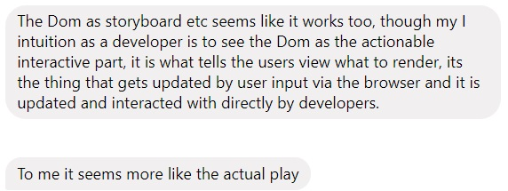
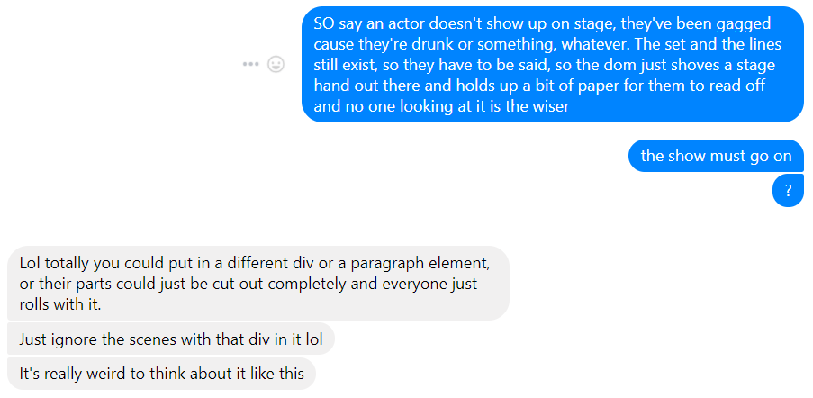
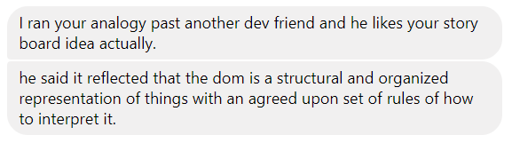

.jpeg)
I hope this non-technical friend is a theatre friend - things are about to get dramatic. Ok so let's say HTML is a script (ha!) - it's the lines delivered by an actor. CSS is the set, the costumes, the props - everything that gives the script visual context.
The DOM...I don't mind admitting I struggled to grasp the DOM well enough to give it an analogy. I'm still not really sure I understand it, but I ran this analogy by a friend who's worked in web development for years, to see if I was at least on the right track. Based on his experience, he saw the DOM filling a different role in my analogy, but conceded that mine still worked.
So in this context, the way I see the DOM fitting in with HTML and CSS, is as the director's notes and storyboard. It's not the script, but it's kind of there. It's not the actual set, but that's all laid out in the storyboard. It's not the actors' movements or the way they interact with the set and the props, but these will all be noted in the storyboard, and the director (in this analogy that's the browser) will refer to the storyboard to make sure everything plays out on stage the way it should.
Just for comparison's sake, here's how my friend sees it.
I'll be honest, I kind of saw this as more justification for my version, and we ended up going down some rabbit holes.
It was a good discussion all around. I think I came away with a better understanding of the DOM than before, and he got to think about it in a way that was unusual for him. It even got him thinking enough to share it with another friend. I'll just leave this here.

It means...everything on the internet is in a box. You may not be able to see them, but they're there. Putting things in boxes means we can fit all our elements together nicely. Got some text? Put a box around it. Neat graphic? Into a box it goes. Just remember that time the waiter said, "Enjoy your meal," and you said, "You too"? You know where it goes!
The box model refers to the design and layout of the boxes our page is made up of. We start with the first box, which is our content - an image, a block of text, a table - whatever.
The content is nested inside padding, and it clears a space around your content. The next layer is the border; the border goes around the content and the padding. Next comes the margin, which boxes up the border, the padding, and the content. Each of the boxes dimensions is specified in the stylesheet.
My wishlist is quite simple. When I was looking through the Zen Garden templates, I was definitely most drawn to the designs that appeared quite minimal, designs that used colour sparingly or had a limited colour palette. I would like my nav bar to be on the side, with the individual blog posts as drop-down options from their category instead of having every post listed in the nav bar. There was also a neat hover on the Garment template that I really like - it has symbols, which when you hover over them show they're links to the HTML and the CSS.
So far I've only come across one site I liked that uses a lot of colour, and that's the S-Town podcast site. Compared with other pages I like, I'm kind of surprised by how much I love this page. I like the way the graphics move around as you interact with the page. The artwork is beautiful and it doesn't really make sense when you first start listening to the podcast. As you progress through the story though, everything ties in perfectly.
I think the more I learn, and the more I use dev tools to explore different sites, the more my wishlist will grow.